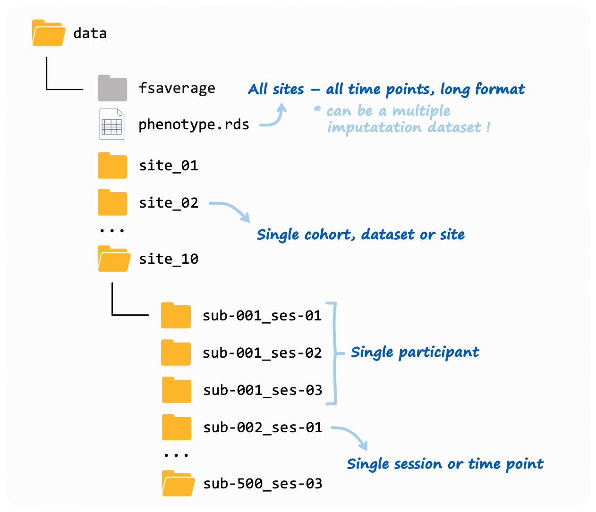

Getting ready, step 2: formatting input data
Serena Defina
2025-08-14
Source:vignettes/articles/01-format-data.Rmd
01-format-data.Rmdverywise was developed to handle complex datasets, with
multiple cohorts/sites as well as repeated neuro-imaging
measures.
In this article we describe how the software expects the input data directory to look like, and what pre-processing steps are necessary to get both your neuro-imaging data and your phenotype data ready for analysis.
A verywise input directory structure
Here is an example of a typical verywise input
directory:

This is also what you will see if you use our data simulation functions. The phenotype file does not need to be inside the same folder as the neuroimaging data, but we placed it in there to keep things tidy.
If you have more than one neuroimaging site (or “cohort” or dataset,
however you want to call it), then each site should have it’s own
folder. Inside each site folder you should have one sub-folder for each
individual measurement (or “session”). These sub-folders should follow
the BIDS convention, so for
example: sub-47_ses-03 will have the 3rd measurement of
subject #47. This will be done automatically by FreeSurfer (see next
session)
Preparing your brain data
To obtain brain surface data, you should first run your subjects through FreeSurfer, using the following command:
recon-all -s <subject-id> -qcacheDon’t forget the -qcache flag! Full instructions can be
found here,
under the header “pre-smoothed fsaverage surfaces”.
The output folder should now look similar to the one you have seen
above. Inside each subject-session sub-folder you should be able to find
a “surf” directory where the brain surface maps for each hemisphere are
saved as .mgh files. These are the files we will be using
for our analysis.
Preparing your phenotype data
So your brain data is all sorted, but you will also need to prepare a
“phenotype” dataset where to store your variables of interest (i.e. the
exposures and covariates). This can be either saved as a file (e.g.,
.rds of .csv), or it can be an R data.frame
that you have already loaded in memory.
Either way, it should it should look something like this:
 So this should be in the “long format” with different
timepoints/groups stacked row-wise.
So this should be in the “long format” with different
timepoints/groups stacked row-wise.
The folder_id column is important
because it is used to link the phenotype to the correct brain data
file.
… TODO
Note that the phenotype file/data object can also be an
imputed dataset. verywise currently
supports several mi dataset formats, including the outputs of mice, mi,
amelia… TODO